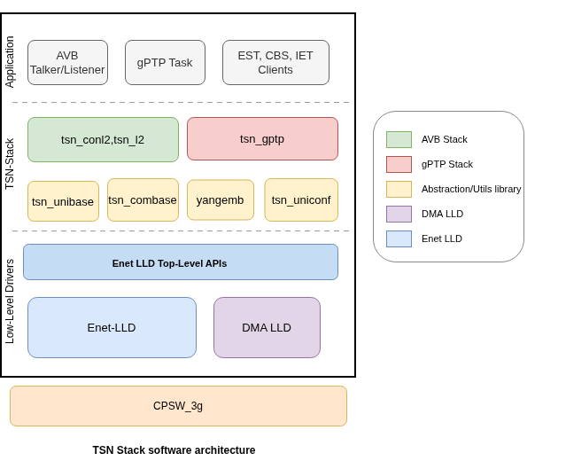

|
AM64x MCU+ SDK
12.01.00
|
|
|
AM64x MCU+ SDK
12.01.00
|
|
TI's TSN stack provides a comprehensive IEEE 802.1 Time-Sensitive Networking implementation for Sitara MCU+ SoC families. The stack is co-developed with Excelfore Corporation and runs on FreeRTOS, integrated with the Enet LLD over the CPSW peripheral.
The TSN Stack provides hardware configuration abstractions for some features 802.1 TSN features like 802.1av, 802.3br, 802.1Qbv etc. The stack is organized into four open-source core libraries plus optional evaluation libraries for AVB (AVTP):
| Library | Role | Source Path |
|---|---|---|
| tsn_unibase | Platform-independent utility functions (logging, memory, lists) | source/networking/tsn/tsn-stack/tsn_unibase/ |
| tsn_combase | Communication primitives (sockets, threads, timers, IPC) | source/networking/tsn/tsn-stack/tsn_combase/ |
| tsn_gptp | IEEE 802.1AS-2020 gPTP protocol state machines and clock servo | source/networking/tsn/tsn-stack/tsn_gptp/ |
| tsn_uniconf | Universal YANG configuration daemon with SimpleDB | source/networking/tsn/tsn-stack/tsn_uniconf/ |
| yangemb | YANG database licensing library (required for all TSN applications) | source/networking/tsn/tsn-stack/license_lib/ |
The following TSN Features of CPSW are supported to be configurable by the TSN Stack.
| Feature | IEEE Standard | Notes |
|---|---|---|
| Credit-Based Shaper (CBS / FQTSS) | 802.1Qav | Hardware per-class CBS shaper in CPSW; reserves per-stream bandwidth using idle slope; YANG model configuration available |
| Interspersing Express Traffic (IET) | IEEE 802.3br | CPSW frame preemption separating express and preemptable traffic queues (802.3br / 802.1Qbu); YANG model configuration available |
| Enhancements for Scheduled Traffic (EST) | 802.1Qbv | Time-aware gate control list (GCL) via CPSW TAS hardware; per-traffic-class gate scheduling with nanosecond precision; YANG model configuration available |
| Time Synchronization (gPTP) | 802.1AS-2020 | Full end-to-end IEEE 802.1AS-2020 stack; grandmaster, slave, and Bridge/Relay Instances; tested against Intel and TI endpoints; YANG data model configuration available |
GPTP_MAX_DOMAINS)PHASE_OFFSET_IIR_ALPHA, FREQ_OFFSET_IIR_ALPHA)GPTP_MAX_DOMAINS ceiling = 2)

The table below depicts the typical resource utilization of TSN Features in a typical TSN included application.
| Resource | Count | Usage |
|---|---|---|
| TX channel | 1 | gPTP (1) |
| RX flow | 1 | gPTP (1) |
| Tasks | 2 | uniconf_task (1), gptp2d_task (1) |
TSN_TSK_STACK_SIZE = 16 KB).| Example | Feature Demonstrated | Standards Exercised |
|---|---|---|
| gPTP Time Receiver | gPTP slave mode, clock lock to grandmaster | 802.1AS-2020 |
| gPTP Time Transmitter | gPTP grandmaster mode | 802.1AS-2020 |
| gPTP Bridge | gPTP Relay Instance (Boundary clock / bridge) | 802.1AS-2020 |
| TSN EST | Scheduled Traffic gate control list (GCL) | 802.1Qbv |
The following third-party devices/Stacks have been used for interoperability verification of the IEEE 802.1AS-2020 gPTP implementation:
| Peer Hardware | Peer Software | Roles Tested |
|---|---|---|
| Intel I210 NIC | Linux ptp4l (linuxptp) | Grandmaster, slave, Bridge/Relay |
| Intel I350 NIC | Linux ptp4l (linuxptp) | Grandmaster, slave, Bridge/Relay |
| TI EVM | TI gPTP stack (TSN SDK) | Peer-to-peer slave / master; daisy-chain with multiple nodes |
| TI EVM with DP83TG721 PHY | TI gPTP stack (TSN SDK) | Grandmaster, slave |
All measurements are on Sitara R5F, release build. Columns: Code = .text, Read Only = .rodata / .const, Read Write = .bss + .data (RAM).
-flto disabled), It is expected to reduce further by 10-20% by enabling --flto flag.| Library | Code (KB) | Read Only (KB) | Read Write (KB) | Total (KB) |
|---|---|---|---|---|
| tsn_unibase | 4 | 1 | 7 | 12 |
| tsn_combase | 14 | 4 | 18 | 36 |
| tsn_uniconf | 34 | 12 | 67 | 113 |
| tsn_gptp | 61 | 12 | 25 | 97 |
| yangemb | 3 | 1 | 0 | 3 |
| Total | 117 | 29 | 116 | 262 |
| gPTP Parameter | Value | Notes |
|---|---|---|
| Initial time to sync | ~500 ms | Measured from link up with Quick sync enabled. See gPTP Time-to-Sync Optimization for tuning details. |
| Sync accuracy | < 100 ns | Tested with Intel I210, I229, and I350 NICs and TI EVM-to-EVM setups. |
For memory optimization, time-to-sync tuning, troubleshooting, and known limitations see:
 1.8.20
1.8.20